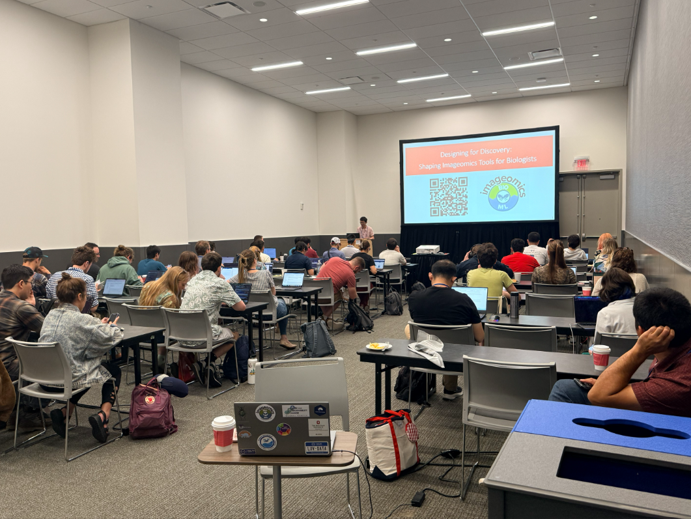

The Imageomics Institute recently hosted Designing for Discovery, a hands-on workshop at Evolution 2026 in Cleveland, Ohio, bringing together researchers interested in exploring how artificial intelligence and image-based analysis can support biological discovery.
Designed to bridge the gap between computational methods and biological research, the workshop introduced participants to the growing field of imageomics and demonstrated how machine learning tools can help researchers extract meaningful insights from images of organisms, specimens, and ecosystems.
The session began with an overview of the Imageomics Institute and the role that image-based data is playing across biodiversity science, ecology, evolution, and systematics. Participants were then introduced to key machine learning concepts through biological use cases involving birds, butterflies, and bark beetles, helping connect technical ideas to real research applications.
The workshop's interactive tutorials gave attendees the opportunity to explore several Imageomics tools, including PyBioCLIP, the Image Embedding Explorer, BioCLIP Image Search Lite, and the Species Similarity Tool (SST). Through live demonstrations in Google Colab, participants learned how these tools can be used for image classification, similarity search, dataset exploration, and trait-based discovery.
Throughout the afternoon, open discussions encouraged attendees to share research challenges, ask questions, and explore how imageomics approaches could be incorporated into their own work. These conversations highlighted the importance of collaboration between biologists and computational researchers in developing tools that are both powerful and accessible.
A special thank you to Diane Boghrat, Matthew Thompson, Jianyang Gu, Net Zhang, Wei-Lun Harry Chao, Caleb Charpentier, Nico Zuupas, Jousef Uyeda, and Fangxun Liu for organizing and leading the workshop, and to everyone who participated and shared their perspectives.
By combining foundational concepts with hands-on exploration, Designing for Discovery provided participants with practical experience using imageomics tools while showcasing the growing potential of AI to accelerate biological research and discovery.